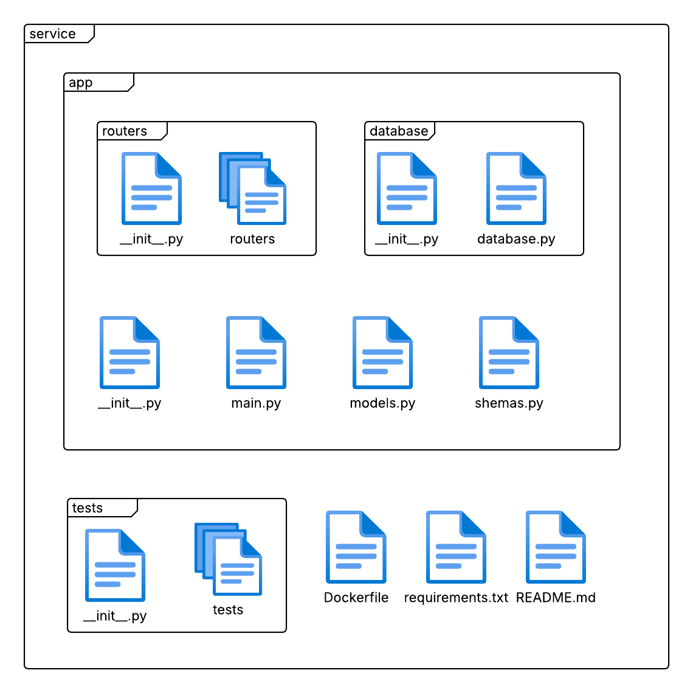

Documento de arquitetura
Documento de Arquitetura de Software
Histórico de Revisão
| Data | Versão | Descrição | Autor(es) |
|---|---|---|---|
| 15/05/2025 | 0.1 | Versão inicial | Philipe Sousa |
| 16/05/2025 | 0.2 | Adiciona Diagrama de sequência | Philipe Sousa |
| 17/05/2025 | 0.3 | Adiciona estrutura de pastas FastAPI | Kess Jhones |
1. Introdução
1.1 Finalidade
Este documento tem como propósito apresentar uma visão geral da arquitetura de software da plataforma EasyCrit, detalhando as principais decisões arquiteturais adotadas durante seu desenvolvimento. O documento serve como referência para orientar a equipe técnica ao longo do projeto, promovendo consistência e alinhamento com os objetivos da aplicação.
1.2 Escopo
O EasyCrit é uma aplicação web desenvolvida por estudantes da Universidade de Brasília (UnB), voltada para a prática de RPG de mesa em ambiente virtual. A plataforma busca oferecer uma experiência acessível, intuitiva e eficiente para jogadores e mestres de RPG, facilitando a organização de sessões e a interação entre os participantes. Este documento contempla os aspectos técnicos essenciais da arquitetura do sistema, estabelecendo diretrizes que devem ser seguidas durante seu desenvolvimento.
2. Representação da Arquitetura
2.1 Descrição Geral
A arquitetura do EasyCrit é baseada em microsserviços, buscando garantir modularidade, escalabilidade e facilidade de manutenção. A comunicação entre os componentes é realizada por meio de requisições HTTP, centralizadas através de um API Gateway, que atua como ponto de entrada principal para o cliente web.
A aplicação é dividida nas seguintes camadas:
- Frontend: Interface web desenvolvida com Next.js.
- API Gateway: Intermediário que direciona as requisições do frontend para os microsserviços apropriados.
- Microsserviços (FastAPI):
- Session Manager: Responsável pelo gerenciamento das sessões de jogo.
- Auth: Responsável pelo controle de autenticação e autorização dos usuários.
- File Manager: Gerencia arquivos enviados e utilizados durante as sessões (como fichas, imagens, etc).
- Banco de Dados (PostgreSQL): Cada microsserviço possui seu próprio banco de dados PostgreSQL, garantindo isolamento e independência entre domínios.
2.2 Diagrama de Relações
{kind=link}
Diagrama elaborado por Kess, 2025.
2.3 Backend: FastAPI
O FastAPI é o framework adotado no backend da aplicação EasyCrit devido à sua alta performance, simplicidade, suporte nativo a operações assíncronas e à familiaridade da equipe de desenvolvedores com a tecnologia.
Estrutura Interna
 Diagrama elaborado por Kess, 2025.
{kind=link}
Descrição da Estrutura de Pastas
A estrutura de pastas dos microsserviços segue um padrão organizado e modular:
Nota sobre os arquivos
__init__.py: Estes arquivos estão presentes em vários diretórios do projeto e servem para identificar os diretórios como pacotes Python, permitindo a importação de módulos entre diferentes partes da aplicação.
service/: Diretório principal do microsserviço-
app/: Contém toda a lógica de aplicaçãomain.py: Ponto de entrada da aplicação FastAPImodels.py: Define os modelos de dados (entidades) utilizados em conjunto com o ORM (SQLAlchemy) para mapear as tabelas do banco de dados para objetos Python-
schemas.py: Define os esquemas de validação e serialização usando Pydantic -
routers/: Contém as definições de rotas da API -
Diversos arquivos que organizam as rotas por funcionalidade
-
database/: Gerencia a conexão e operações com o banco de dados database.py: Configuração de conexão com o banco de dados
-
tests/: Contém os testes automatizados do serviço- Diversos arquivos organizados por funcionalidade
-
Dockerfile: Instruções para a criação da imagem Docker requirements.txt: Dependências Python necessáriasREADME.md: Documentação específica do microsserviço
Esta estrutura foi projetada para promover a separação de responsabilidades, facilitar a manutenção e permitir o crescimento sustentável de cada microsserviço.
2.4 Frontend: Next.JS
O Next.js é o framework escolhido para o desenvolvimento do frontend da aplicação EasyCrit. Construído sobre o React, o Next.js oferece um ambiente moderno para criação de interfaces web robustas.
A escolha pelo Next.js se deve à sua flexibilidade, suporte à renderização híbrida (SSR, SSG, ISR), roteamento automático baseado em arquivos e à integração facilitada com APIs REST e outras fontes de dados.
Principais Características Utilizadas
-
Pages-based routing
Cada arquivo.tsxna pasta/pagesrepresenta uma rota da aplicação. O roteamento é automático, baseado na estrutura de diretórios. -
Renderização Híbrida
- SSR (Server Side Rendering): Utilizado para páginas que precisam de dados atualizados a cada requisição.
-
SSG (Static Site Generation): Usado para páginas que não precisam ser atualizadas com frequência, melhorando a performance e o tempo de carregamento.
-
API Routes
Caso necessário, é possível definir rotas de backend leves diretamente em/pages/api. -
Static Files
Arquivos estáticos como imagens, ícones e outros recursos são armazenados na pasta/public.
Estrutura Geral do Projeto
/public/→ Arquivos públicos (imagens, ícones, etc.)/src/app/→ Estrutura de rotas baseada em arquivos (App Router)/src/components/→ Componentes reutilizáveis (Header, Footer, etc.)/src/styles/→ Estilização global e módulos CSS/src/services/→ Funções para chamadas à API do backend FastAPI/src/hooks/→ Hooks customizados (ex: useAuth, useFetch)/src/contexts/→ Contextos globais (auth, tema, etc.)
3. Diagrama de Sequência
O diagrama de sequência a seguir demonstra a interação entre os principais componentes do sistema durante o processo descrito. O modelo foi elaborado pelo autor com base no comportamento esperado da aplicação.
{kind=link}
Diagrama elaborado por Philipe, 2025.
4. Diagrama Lógico do Banco de Dados
{kind=link}
{kind=link}
5 - Tamanho, Desempenho e Qualidade
5.1 Tamanho do Sistema
O sistema EasyCrit foi desenvolvido com uma arquitetura modular baseada em microsserviços, o que possibilita a distribuição do código em domínios específicos. Isso reduz a complexidade individual de cada serviço, mesmo que o sistema como um todo cresça em funcionalidades.
O banco de dados também segue esse princípio de modularidade. Cada microsserviço possui seu próprio banco, com tabelas focadas apenas no seu domínio de responsabilidade. Isso facilita a escalabilidade horizontal e a manutenção do projeto.
5.2 Desempenho
O sistema foi projetado para manter um bom desempenho mesmo com múltiplos usuários simultâneos. Algumas decisões que favorecem isso incluem:
- Microsserviços desacoplados, cada um com responsabilidade única, reduzindo gargalos em pontos críticos.
- Persistência distribuída, com bancos PostgreSQL separados por serviço, evitando competição por recursos entre domínios.
- Uso do FastAPI, que oferece suporte a operações assíncronas nativas e alta performance no tempo de resposta das rotas HTTP.
5.3 Qualidade
A qualidade da aplicação é mantida através das seguintes práticas:
- Padronização de estrutura de código entre microsserviços.
- Separação de responsabilidades entre camadas (rotas, schemas, modelos, testes).
- Utilização de testes automatizados para rotas e funcionalidades críticas.
- Adoção de ferramentas de qualidade estática, como
ruff, para garantir boas práticas de linting e formatação. - Uso de Docker e
docker-composepara facilitar a replicação do ambiente de desenvolvimento e produção.